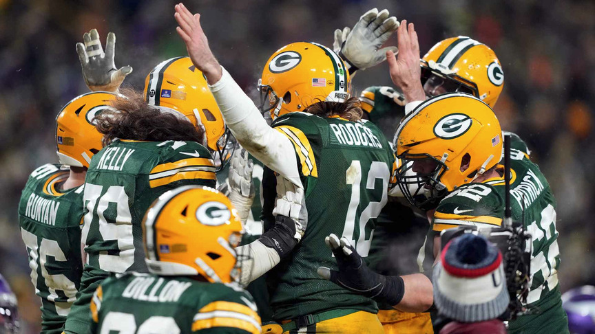

The Green Bay Packers are an American football professional team headquartered in Green Bay, Wisconsin. The Packers are a member of the National Football Conference (NFC) North division of the National Football League (NFL). It is the NFL's third-oldest club, having been founded in 1919, and the only non-profit, community-owned major league professional sports team in the United States. Lambeau Field has hosted home games since 1957.
The Milwaukee Bucks are a professional basketball club headquartered in Milwaukee, Wisconsin. The Bucks are a part of the National Basketball Association (NBAEastern )'s Conference Central Division. The squad was formed as an expansion team in 1968 and now plays at Fiserv Forum.